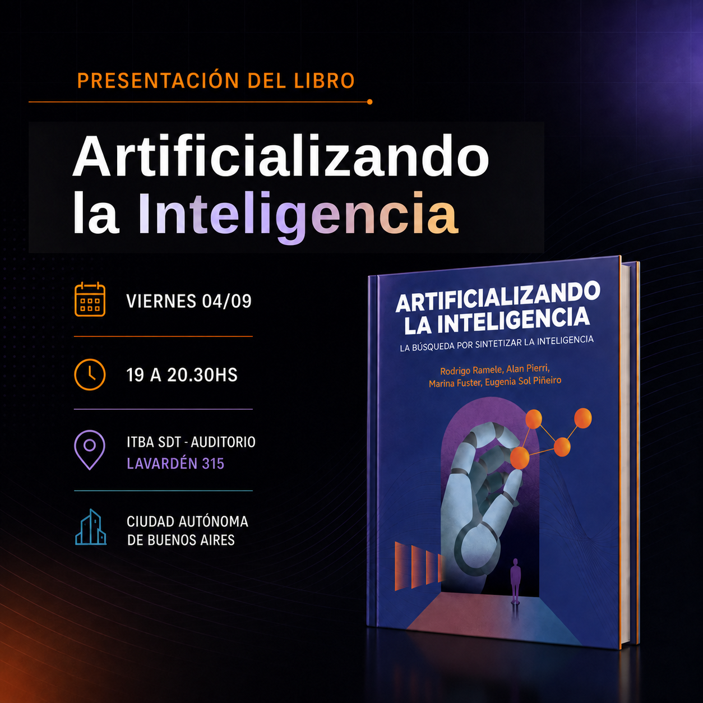

Próxima presentación
Presentamos Artificializando la Inteligencia
Te invitamos a compartir una conversación sobre el libro y las ideas que dieron origen a este proyecto.
- Cuándo
- Dónde
- ITBA SDT · Auditorio
Lavardén 315, Ciudad Autónoma de Buenos Aires


Se publicó Artificializando la Inteligencia.
Arrancamos con el sitio de Artificializando la Inteligencia y publicamos una nueva versión del borrador.